NOGLS 4503 RESET - CC8280
Benchmarks Apps Home Geocaching Stats
Here is a list of benchmarks that I have personally recovered that are still there.
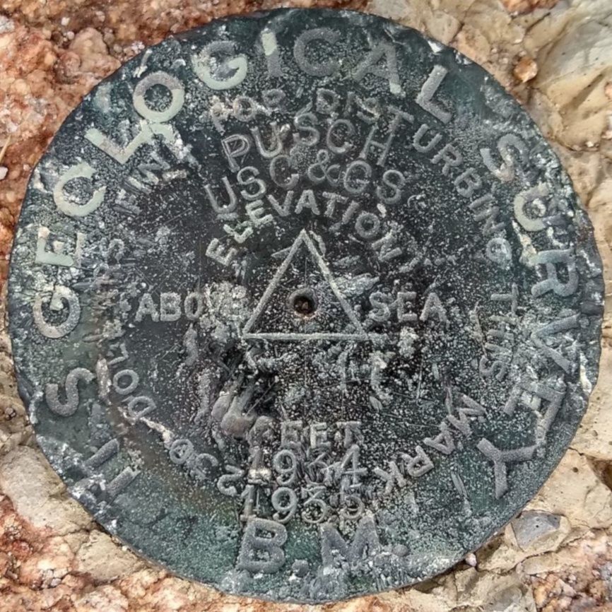
PUSCH - CZ1865
"PUSCH" is a benchmark monumented by the USGS in 1903 located in Pima County, Arizona. It has 2 reference marks and a non-dedicated azimuth.
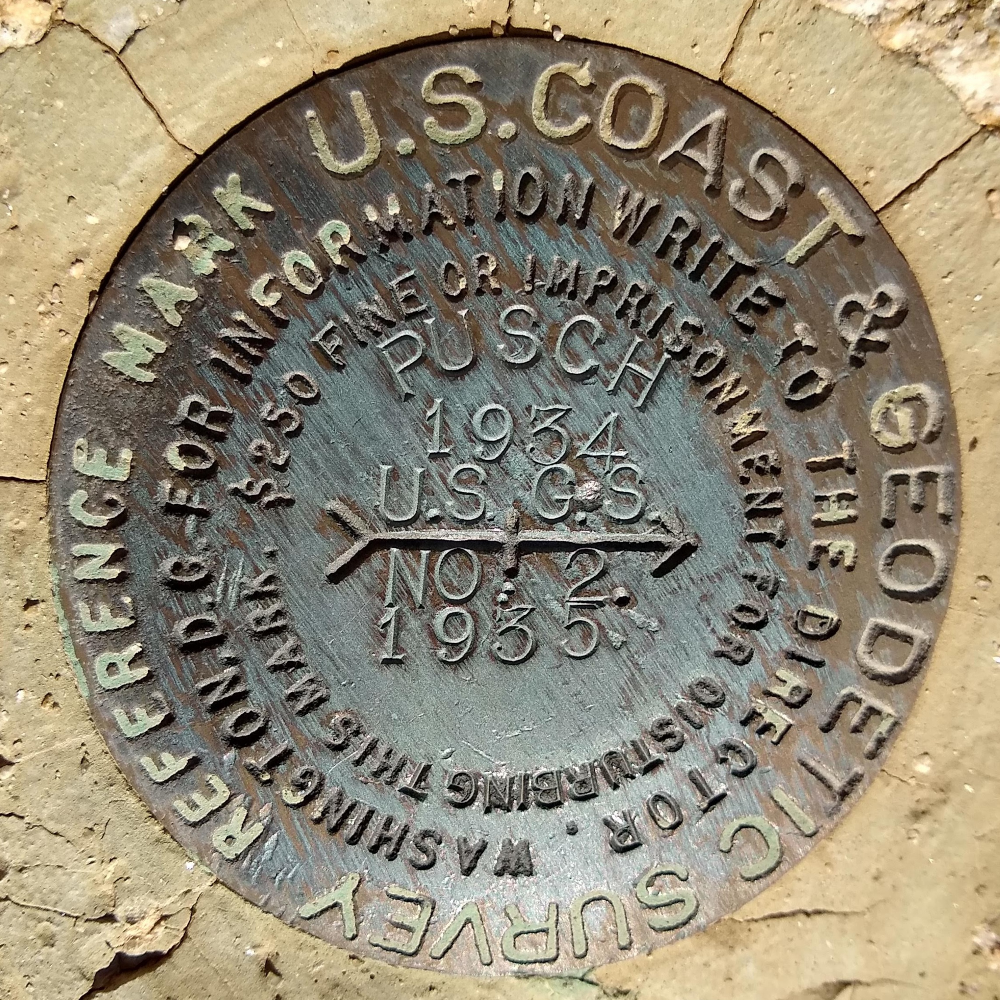
PUSCH NO: 2 - CC8062
"PUSCH NO: 2" is a benchmark monumented by the USC&GS in 1935 located in Pima County, Arizona. It is a deticated reference mark for PUSCH.
"SOTOL" is a benchmark monumented by the USGS in 1946 located in Pinal County, Arizona. It has 2 reference marks, one being deticated and the other not being deticated.
NOGLS 4503 RESET - CC8280
"NOGLS 4503 RESET" is a benchmark monumented by the USGS in 1946 located in Pinal County, Arizona. It is a non deticated reference mark for SOTOL.
"PA 2" is a benchmark originally monumented by the USC&GS in 1959 and remonumented in 1973 located in Pima County, Arizona. It has 3 reference marks and a non-dedicated azimuth.
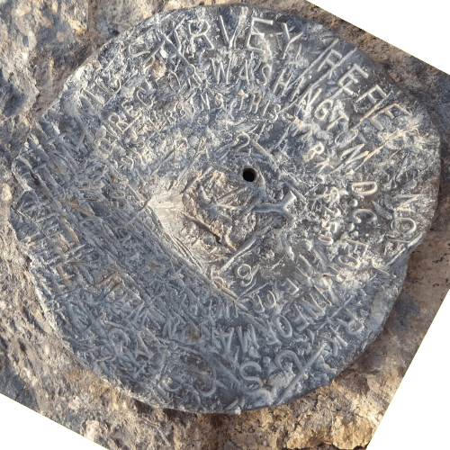
PA 2 NO 1 - CC7928
"PA 2 NO 1" is a benchmark monumented by the USC&GS in 1959 located in Pima County, Arizona. It is a deticated reference mark for PA 2.
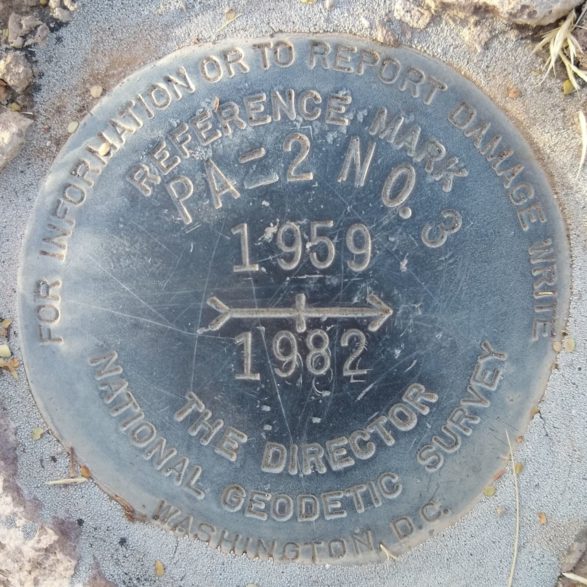
PA 2 NO 3 - CR8310
"PA 2 NO. 3" is a benchmark monumented by the USC&GS in 1982 located in Pima County, Arizona. It is a deticated reference mark for PA 2.
"WASSON NO 2" is a benchmark monumented by the USC&GS in 1919 located in Pima County, Arizona. It is a deticated reference mark for WASSON, which has been destroyed.
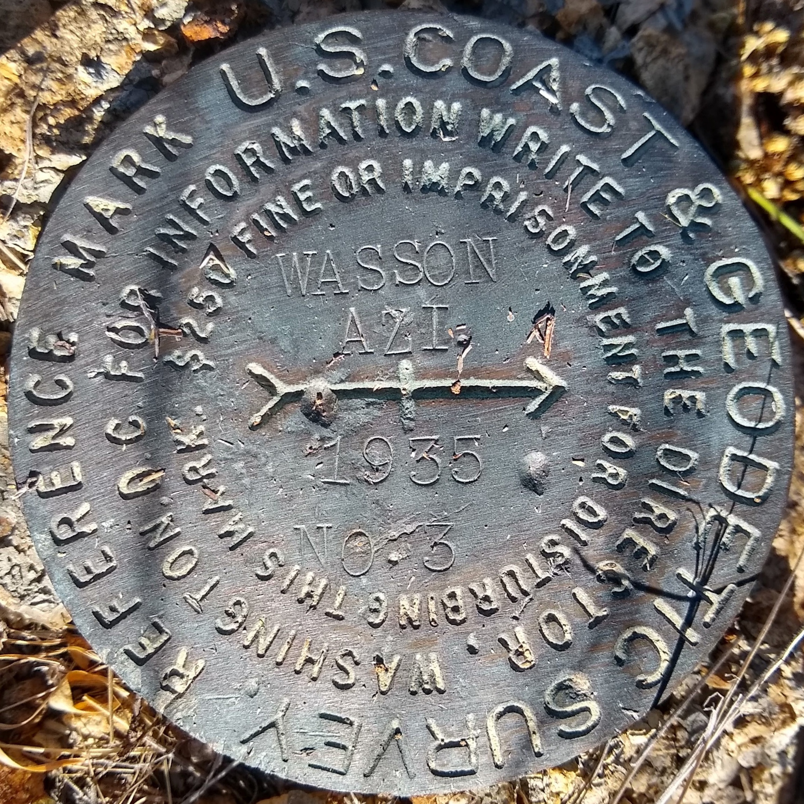
WASSON AZI NO. 3 - CH5701
"WASSON AZI NO. 3" is a benchmark monumented by the USC&GS in 1935 located in Pima County, Arizona. It is a deticated azimuth mark for WASSON, which has been destroyed.

MAGNETIC AZIMTUH NO: 3 - CZ2410
"MAGNETIC AZIMUTH NO: 3" is a benchmark monumented by the USC&GS in 1935 located in Pima County, Arizona. It is a deticated azimuth mark for MAGNETIC, which has been destroyed.

TUCSON CAMERA - CZ1829
"TUCSON CAMERA" is a benchmark monumented by the USAFGS in 1964 located in Pima County, Arizona.
"TUCSON A" is a benchmark monumented by the USC&GS in 1937 located in Pima County, Arizona. It is right next to "TUCSON B".

TUCSON B - DE5834
"TUCSON B" is a benchmark monumented by the USC&GS in 1937 located in Pima County, Arizona. It is right next to "TUCSON A".
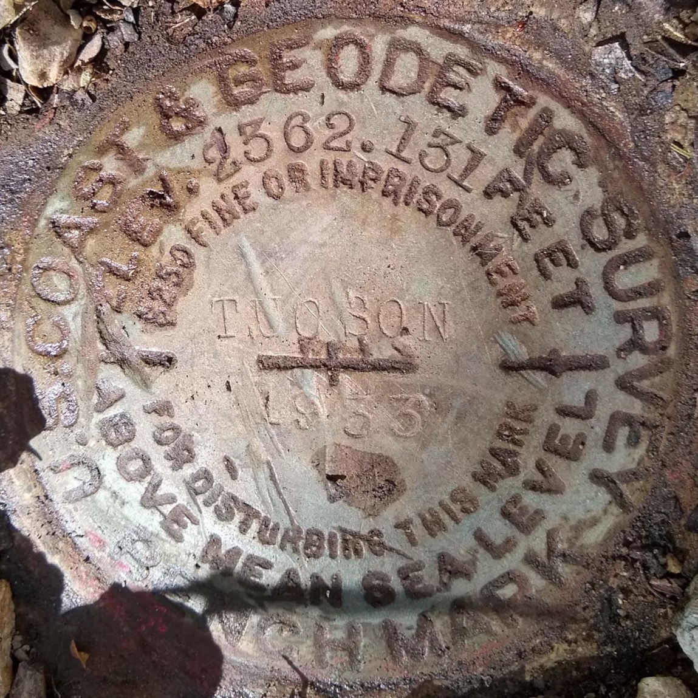
TUCSON - CZ0276
"TUCSON A" is a benchmark monumented by the USC&GS in 1933 located in Pima County, Arizona.
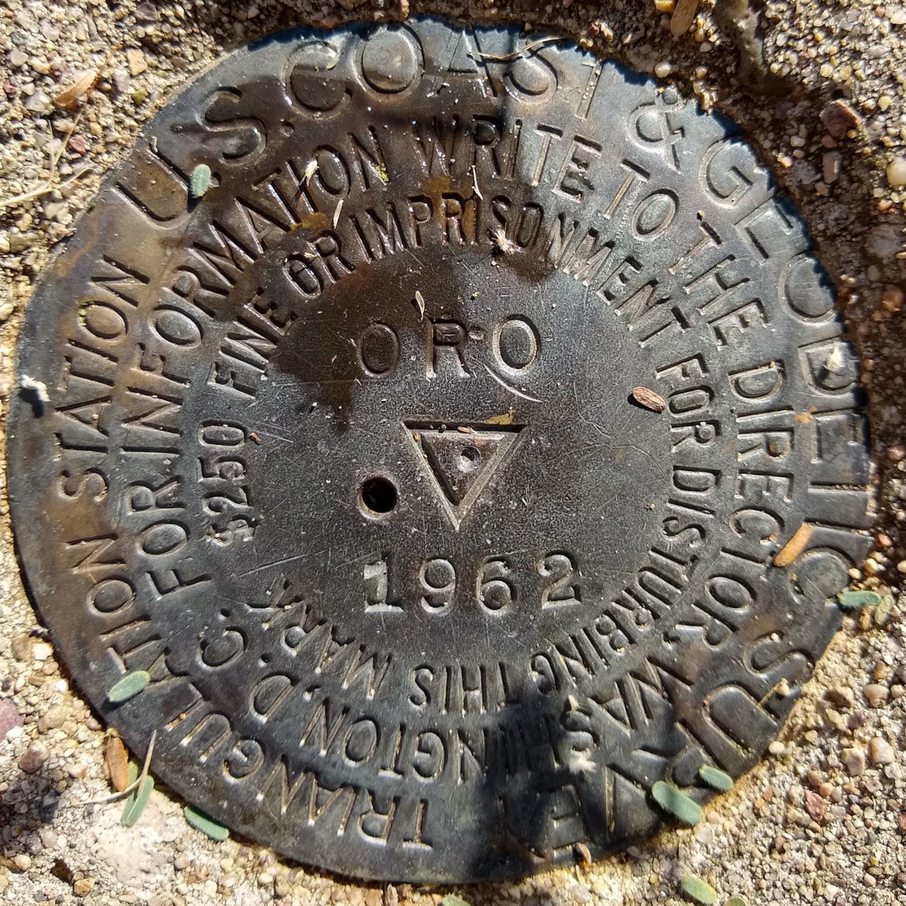
ORO - CZ0118
"ORO" is a benchmark monumented by the USC&GS in 1962 located in Pima County, Arizona. It has 2 deticated reference marks and a non deticated azimuth, which has been destroyed.
"ORO NO 1" is a benchmark monumented by the USC&GS in 1962 located in Pima County, Arizona. It is a deticated reference mark for ORO.
"ORO NO 2" is a benchmark monumented by the USC&GS in 1962 located in Pima County, Arizona. It is a deticated reference mark for ORO.
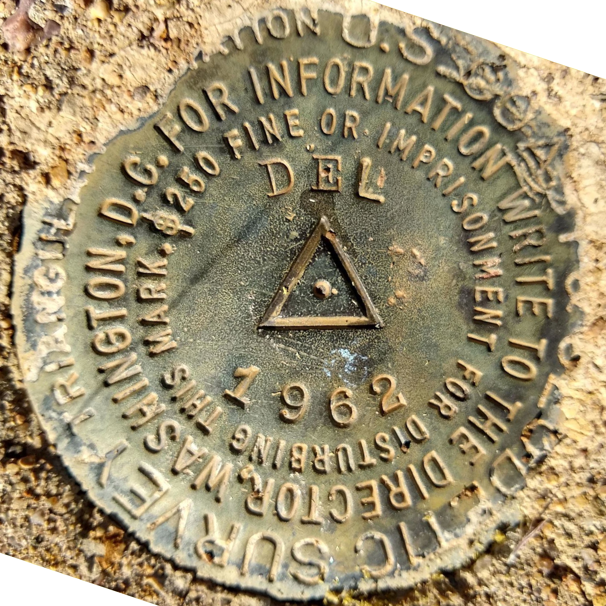
DEL - CZ1693
"DEL" is a benchmark monumented by the USC&GS in 1962 located in Pima County, Arizona. It has 2 deticated reference marks and a non deticated azimuth, which has been destroyed.
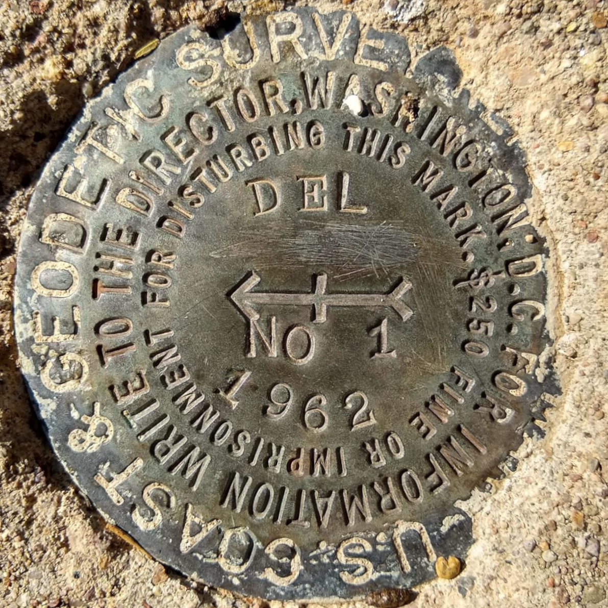
ORO NO 1 - CZ1694
"DEL NO 1" is a benchmark monumented by the USC&GS in 1962 located in Pima County, Arizona. It is a deticated reference mark for DEL.
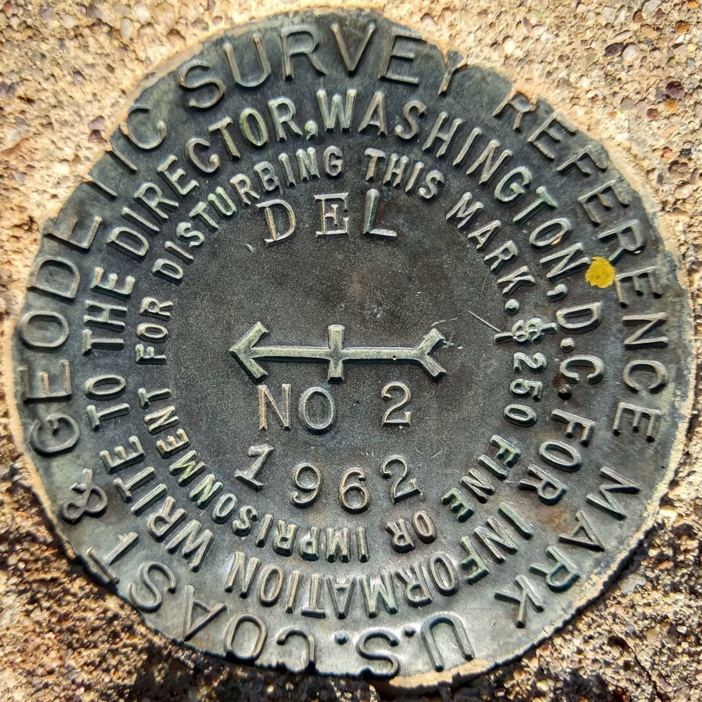
ORO NO 2 - CZ1692
"DEL NO 2" is a benchmark monumented by the USC&GS in 1962 located in Pima County, Arizona. It is a deticated reference mark for DEL.

STRONG NO 1 - DV0653
STRONG NO 1" is a benchmark monumented by the USC&GS in 1962 located in Maricopa County, Arizona. It is a deticated reference mark for STRONG.
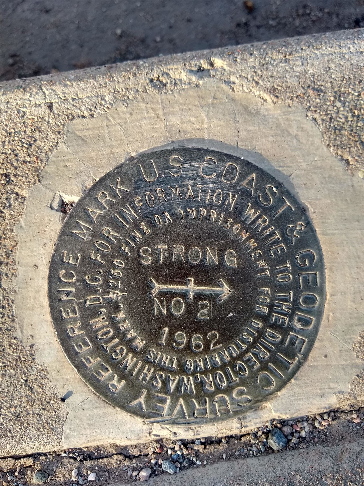
STRONG NO 2 - DV0651
STRONG NO 2" is a benchmark monumented by the USC&GS in 1962 located in Maricopa County, Arizona. It is a deticated reference mark for STRONG.

NOGLS 2573
"NOGLS 2573" is a benchmark monumented by the USGS in 1904 located in Pima County, Arizona.
Datasheet (on trunk line 4 of page 2)